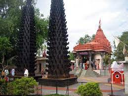

Among the many notable features of the soon-to-open "Mahakal Lok" in Ujjain are two imposing entrances, a towering column of 108 ornate pillars made of finely carved sandstone, gushing fountains, and a panel of over 50 murals depicting stories from the Shiv Puran.
Mahakal lok Explore with youtube video
Ujjain Harsiddhi Mata Ji
Just around 350 m away from Mahakaleshwar Temple and across the Rudra Sagar Lake, is the Harsiddhi Mata Temple, another important land mark of Ujjain. It is one of the 51 major Shaktipeeths of India. Legend has it that Goddess Parvati took the form of Harsiddhi to kill two demons at the behest of Lord Shiva. Her elbow fell here when Shiva was carrying her body from the sacrificial fire. The main deity, Harsiddhi Mata, is painted in dark vermillion color in the centre of a very large temple complex with idols of Mahasaraswati and Mahalakshmi beside it. The presence of Shree Yantra which represents nine forms of Durga is one of the characteristic features of this temple. The temple was built during the Maratha Period and has two towering deep stambhs that are lit up on the eve of every festival. The temple also offers accommodation.

Harsiddhi Mata Ji Explore with youtube video
Ujjain Chintaman Ganesh
This temple is dedicated to lord Ganesha. The very name “Chinthaman Ganesh” means Lord Ganesh who removes all worries and grants wishes of the devotees. This lord Ganesh is said to be Swayambu. Here three forms of lord Ganesha are seated together. Out of these forma Chintaman Ganesh removes worries, Ichhaman Ganesh fulfils desires while Siddhivinayak gives Riddhi-Siddhi. The temple is clean and tidy. One for sure will achieve unique satisfaction after visiting temple. Recommended as a Must visit temple in UJJAIN for all devotees.
Ujjain Chintaman Ganesh Explore with youtube video